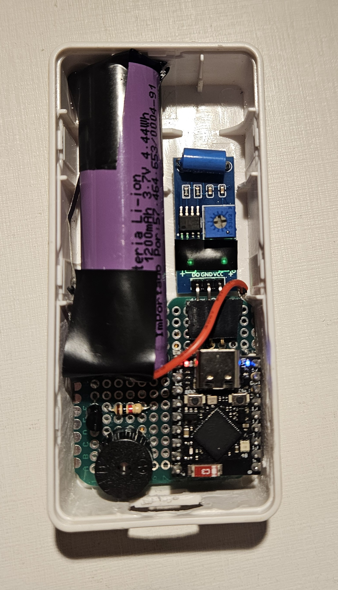
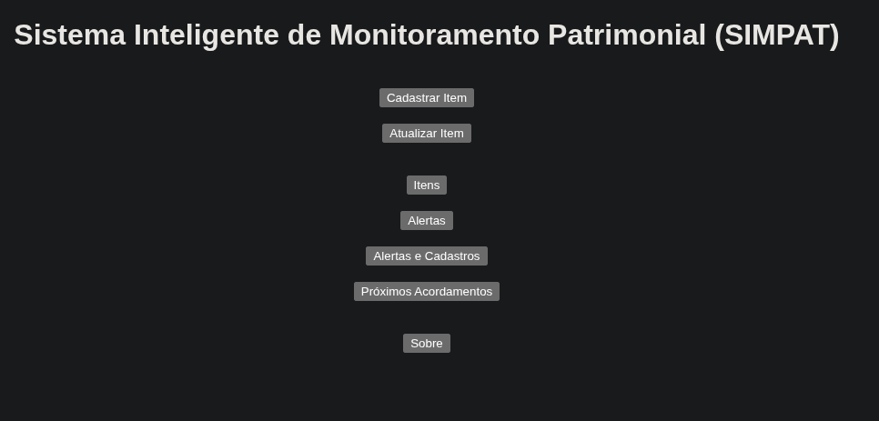

Instituições de ensino superior dependem de uma quantidade significativa de ativos patrimoniais para sustentar suas atividades acadêmicas e administrativas, como computadores, notebooks, projetores, monitores, televisores, caixas de som e outros equipamentos de apoio didático. Em muitos cenários, esses itens são distribuídos entre salas, laboratórios e setores sem um mecanismo de rastreabilidade contínua. Como consequência, surgem problemas recorrentes de extravio, remanejamento não registrado, dificuldade de auditoria e suspeitas de furto.
O projeto proposto visa desenvolver um protótipo funcional de sistema inteligente de monitoramento patrimonial por localização esperada, no qual cada ativo monitorado recebe um dispositivo embarcado de baixo consumo energético. Esse dispositivo será acoplado ao patrimônio e associado, no sistema, a uma sala previamente cadastrada. A premissa do projeto não é realizar geolocalização precisa em tempo real, mas sim monitorar se o patrimônio permanece no ambiente esperado e sinalizar indícios de movimentação não autorizada.
A solução será composta por um módulo embarcado baseado em ESP32, um sensor de movimento, um buzzer para alerta local e uma bateria para alimentação autônoma. Em operação normal, o dispositivo permanecerá em modo de baixo consumo e realizará um envio diário de verificação para um servidor. Em paralelo, a lógica embarcada será capaz de detectar movimentações recorrentes em intervalo curto. Quando essa condição for classificada como crítica, o sistema executará duas ações: acionará o buzzer como alerta local e tentará transmitir ao servidor o identificador único do patrimônio.